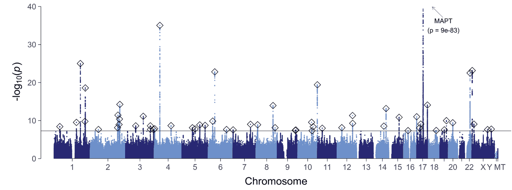
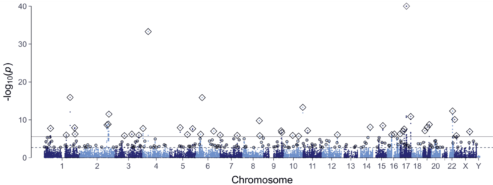

Choose what to explore
Pick a result, then the brain age model and sample where available. The figures and tables below update right away.
Loading results
Tap a category to filter the plot and table. Numbers count traits at FDR < 5%.
Genome-wide significant loci for brain age gap
Manhattan plot of the combined European meta-analysis for the selected brain age model. Diamonds mark the lead variants of independent loci; the line marks p = 5×10−8, and the y-axis is truncated at −log10(p) = 40. The table lists all loci found for this model; select a row for details.

| Locus | Gene | p |
|---|
Genetic correlations of brain age gap with 38 selected traits
Traits from published GWAS, grouped by health domain. Cells are coloured by the genetic correlation rg where p < 0.05 and shaded grey otherwise; * p < 0.05, ** FDR < 0.05. Hover or tap a cell for the exact values, including the SNP heritability of the selected trait.
Gene-based association
Manhattan plot of the fastBAT gene-based tests for the selected brain age model. The solid line marks Bonferroni significance, the dashed line FDR < 5%; diamonds mark the lead genes of independent loci passing Bonferroni and circles those passing FDR only. The y-axis is truncated at −log10(p) = 40.

| Gene | p |
|---|
Mendelian randomization between brain age gap and 12 traits
Generalised summary-data-based Mendelian randomization (GSMR) in both directions. Cells are coloured by the GSMR z-score (b / SE) where p < 0.05 and shaded grey otherwise; * p < 0.05, ** FDR < 0.05. Hover or tap a cell for the estimate and the sensitivity analyses; select a cell to compare all MR methods for that trait.
SNP heritability
Proportion of variance in brain age gap explained by common SNPs, estimated with LD score regression (LDSC). “Combined” is the European meta-analysis of discovery and replication samples. Bars show 95% confidence intervals (±1.96 SE); hover or tap a point for the exact values.
* Sex-stratified analyses include UK Biobank participants only (without LIFE-Adult).
Polygenicity
GENESIS estimates of the number of SNPs with non-zero effect (European discovery + replication meta-analysis), with height and neuroticism as reference traits. Bars show ±1 SE.
Hover or tap a bar for the GENESIS projection: the sample size at which a GWAS would explain 80% of the SNP heritability, and the number of genome-wide significant independent SNPs (“expected loci”) at that sample size.
Partitioned heritability
Enrichment of SNP heritability in functional annotations of the LDSC baseline model: the share of heritability divided by the share of SNPs in each annotation. Filled points pass FDR < 5%.
Cell-type groups
Heritability enrichment in ten cell-type groups defined by cell-type-specific histone marks (Finucane et al., 2015), each added to the baseline-LD model. Filled points pass FDR < 5%.
Enrichment p-values are one-sided tests of a positive heritability coefficient (τ > 0) conditional on the other annotations, as in the paper. An annotation can therefore show an enrichment above 1 with a p-value close to 1.
| Trait | r | p | FDR |
|---|
How to read this
SNP heritability is the share of variance in brain age gap explained by common SNPs, estimated with LD score regression (LDSC) in the discovery sample (n = 32,634), the European replication sample (n = 22,256) and their combined European meta-analysis (n = 54,890), and separately in women (n = 27,789) and men (n = 25,268). The sex-stratified analyses include UK Biobank participants only.
Polygenicity estimates from GENESIS refer to the combined European meta-analysis (n = 54,890): the number of SNPs with a non-zero effect, and a projection of the sample size at which a GWAS would explain 80% of the SNP heritability, with the number of independent genome-wide significant SNPs expected at that sample size. Height and neuroticism are shown for comparison.
Partitioned heritability, also from the combined European meta-analysis (n = 54,890), uses the LDSC baseline model (functional annotations) and ten cell-type groups defined by cell-type-specific histone marks (Finucane et al., 2015). Enrichment is the share of SNP heritability divided by the share of SNPs in an annotation; values above 1 mean the annotation carries more heritability than its size would suggest.
GWAS loci come from the combined European meta-analysis (n = 54,890) of the three brain age models. After cross-trait LD clumping of index variants (r² > 0.1, 10,000-kb window), 59 distinct loci remained; each locus contains up to three co-inherited index variants, one per brain age model for which a genome-wide significant association (p < 5×10−8) was found. The Manhattan plot and table show the loci of the selected model. “All together” shows all 59 loci, with a Manhattan plot of the smallest p value per variant across the three models, and gives each locus the statistics of the model with the smallest p value. Positions refer to hg19 (GRCh37).
A locus counts as novel when it does not contain any variant reported in seven earlier GWAS of brain age gap (Jonsson et al., 2019; Smith et al., 2020; Ning et al., 2021; Kim et al., 2023; Leonardsen et al., 2023; Wen et al., 2024; Yi et al., 2025). To test this, the index variants and the previously reported variants were clumped together with the same settings (r² > 0.1, 10,000-kb window, LD estimated in UK Biobank imaging participants of European ancestry); a locus is previously reported when a previously reported variant falls into its clump. For these loci, the details list the earlier studies with their strongest reported variant.
The prioritized gene aggregates seven gene nomination strategies shown in the locus details: SBayesRC credible-set annotation, nonsynonymous variants in the 95% credible set, SMR with BrainMeta v2 eQTL and sQTL data, single- and multi-tissue GTEx eQTL mapping, and the polygenic priority score (PoPS). Hover over a row label, or open “What the columns mean” in the locus details, for the definition of each column. Values in parentheses are shown as reported in the paper’s supplementary tables.
Phenome-wide association study (PheWAS). All views of the phenotypic correlations come from one PheWAS: each UK Biobank variable was tested with PHESANT v1.1 in the UK Biobank imaging discovery sample (n = 32,634; the number available per trait is shown in the table). Each association between brain age gap (in years) and a trait was estimated in a regression model that included age, age², sex, assessment centre and total intracranial volume as covariates, so the association itself is adjusted for these variables; the sex-stratified analyses were run separately in women (n = 17,084) and men (n = 15,550). Categorical variables with several levels appear as separate binary tests, shown with their coding after the field number (for example 6150#4).
Manhattan and volcano plots. Each point is one PheWAS test. The Manhattan plot orders the traits by category along the x-axis, with −log10(p) on the y-axis; the volcano plot places them by effect size r instead, so direction and strength are visible at once. In the women vs. men scatter plot, each point is a trait with its r in women on the x-axis and in men on the y-axis; the Manhattan and volcano plots of this sample show the test for the sex difference, with the difference Δr (women − men) on the x-axis of the volcano plot. The category buttons under the plot filter the plot and the table.
FDR hits by category, the bar chart below the table, counts the traits with FDR < 5% in each category for each of the three brain age models; selecting a bar filters the plot and table to that category. Selecting a point or a table row opens the trait panel with the estimates across models and samples.
r is a correlation-scale effect size derived from each test statistic, r = sign(β) · √(z² / (z² + N − 2)), so it is comparable across linear, logistic and ordinal models. β is the raw PHESANT coefficient on that model’s own scale. Confidence intervals in the trait panel are for r, via Fisher’s z. FDR is the Benjamini–Hochberg q-value within each model and sample; the Bonferroni line is 0.05 divided by the number of tests shown. The women-versus-men comparison tests whether the female and male estimates differ (two-sided z-test).
Phenotypic correlations describe shared variation and do not establish cause.
Genetic correlations (rg) were estimated with LD score regression between the brain age gap GWAS (combined European meta-analysis, n = 54,890) and the Neale lab GWAS of UK Biobank traits. h² in the table is the SNP heritability of the UK Biobank trait on the observed scale. FDR is the Benjamini–Hochberg q-value within each brain age model.
In the Manhattan and volcano plots, each point is one UK Biobank trait from the Neale lab GWAS, ordered by category or placed by rg. The bar chart FDR hits by category below the table counts the traits with FDR < 5% per category for each brain age model.
Genetic correlations describe shared genetic influences and do not establish cause.
Genetic correlations with selected traits (rg) were estimated with LD score regression between the brain age gap GWAS (combined European meta-analysis, n = 54,890) and 38 published GWAS of traits from eight health domains: psychiatric disorders, substance use, neurological disorders, personality, sleep, cognition, anthropometric traits and cardiovascular traits. Hovering or tapping a cell shows the study behind each trait. FDR is the Benjamini–Hochberg q-value as reported in the result table. The heatmap follows the paper figure: cells are coloured only where p < 0.05, with one star for p < 0.05 and two stars for FDR < 0.05.
Switch to UK Biobank traits for the genetic correlations with the Neale lab GWAS of UK Biobank traits. Genetic correlations describe shared genetic influences and do not establish cause.
Gene-based tests were run with fastBAT (GCTA) on the combined European meta-analysis (n = 54,890) for each brain age model. fastBAT combines the association statistics of all SNPs within a gene’s boundaries (hg19 RefSeq gene list, no additional window) while accounting for linkage disequilibrium, estimated in UK Biobank imaging participants of European ancestry. Of 18,629 genes tested, genes pass Bonferroni significance at p < 0.05 / 18,629 = 2.7×10−6; FDR is the Benjamini–Hochberg q-value within each model. Genes within 3 Mb of a more significant gene were clumped into one locus, whose most significant gene is its lead gene.
Only genes with FDR < 5% for at least one brain age model are included here. Switch the level back to Variants for the 59 genome-wide significant loci of the SNP-level analysis.
Mendelian randomization uses genetic variants as instruments to test whether one trait has a causal effect on another. Effects were estimated with GSMR between the brain age gap GWAS (combined European meta-analysis, n = 54,890) and 12 published GWAS of cardiometabolic, anthropometric, psychiatric and educational traits, in both directions: trait → brain age gap (the trait as exposure) and brain age gap → trait (brain age gap as exposure). Instruments were clumped (r² < 0.001, 10,000-kb window), and pleiotropic outliers were removed with the HEIDI test. FDR is the Benjamini–Hochberg q-value within each direction and brain age model. The effect size b is on the scale of the summary statistics used.
The robustness of each estimate was checked with nine further methods on the same instruments (without HEIDI outlier removal): inverse-variance weighted (IVW), debiased and penalized IVW, weighted median, MR-Egger, maximum likelihood, mode-based estimation, contamination mixture and MR-PRESSO. The number of methods with p < 0.05 is shown for each estimate, out of ten including GSMR. For Educational attainment, no estimate is available with brain age gap as the exposure.
Mendelian randomization rests on assumptions, in particular that the instruments affect the outcome only through the exposure; results should be read together with the sensitivity analyses.
This view reproduces the comparison of genetic and phenotypic correlations reported in the paper. Each point is a UK Biobank trait with a genetic correlation (rg, LD score regression between the combined European brain age gap GWAS, n = 54,890, and the Neale lab GWAS) and a phenotypic correlation (r, PHESANT in the UK Biobank imaging discovery sample, n = 32,634) with brain age gap. Trait pairs are matched by description; multinomial models are excluded and only traits with SNP heritability h²/SE > 1.96 are kept. A few descriptions pair fields that share a name, for example body mass index from two UK Biobank fields.
Above the plot are the Pearson correlation across trait pairs, its p-value and the mean absolute difference (MAD) between rg and r; the line is the least-squares fit.
Cite
Jawinski P, Forstbach H, Kirsten H, Beyer F, Villringer A, Witte AV, Scholz M, Ripke S, Markett S. Genome-wide analysis of brain age identifies 59 associated loci and unveils relationships with mental and physical health. Nature Aging 5, 2086–2103 (2025). doi:10.1038/s43587-025-00962-7